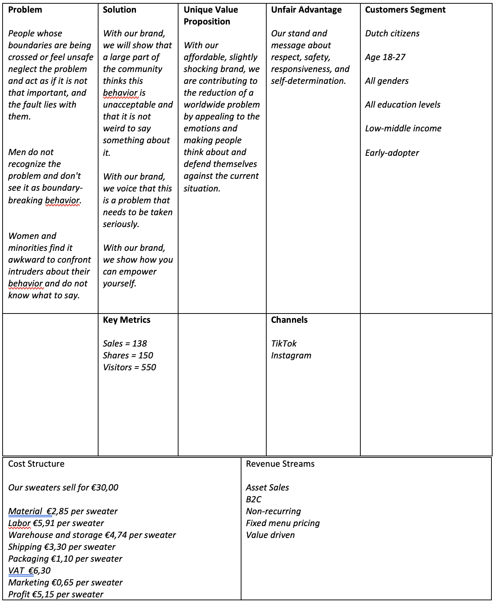
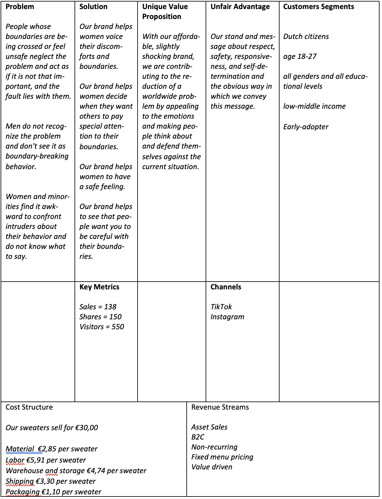

4 Lean Canvas
Lean Canvas V1
Problem:
We experienced firsthand that often, we don't feel safe when walking on the street or being in a bar. We discussed this together and concluded that we usually do not talk about these issues often since we feel uncomfortable talking about them. When we talked about our feelings, we noticed that this often did not change anything. Still, events happened in which we felt like our boundaries were crossed. Nowadays these problems are not really being solved. You can go to authorities when you have been in an inconvenient situation, but then it is already too late. Some people also stay at home, go home earlier or only go out with a large group of friends, not by themselves.
Solution:
Because we find it hard to say what we feel, we think it might be a smart idea if we can voice our thoughts through a product that literally says what we want to communicate with a tagline. This also shows others that we want our boundaries to be respected so that they can take this into account or can help us when they see we feel uncomfortable in a situation.
Unique Value Proposition:
We think our brand should stand for respect, self-determination, safety, and responsiveness. Because boundaries can be accepted with respect, and a feeling of security can be accomplished. By trying to solve the problem and showing our boundaries, we show we stand for self-determination. We respond to a problem so that others can respond respectfully to our boundaries. We believe that the combination of these four values makes us unique.
Unfair Advantage:
We do not know any companies that are so outspoken regarding crossing boundaries and offering a solution. That is why we are unique in this and have an unfair advantage.
Customer Segments:
We are 21, 23, and 23 years old, we are all Dutch, and all three of us experience that our boundaries are being crossed. This started when we were about 16-18 years old. We came up with the customer segment of Dutch citizens between 16-and 24 years old. We decided to make our target group people who have a low-middle income since we want our sweaters to be affordable for everyone so that everyone can show their boundaries. We believe that boundaries of all genders and people of all educational levels are being crossed. We will focus on early adopters since our brand and the product is new. These adopters are in need for a solution for our stated problems.
Key Metrics:
Since we use social media to make our brand known to the public and communicate with them, we will see if we are on the right track by shares and visitors on our social media channels. We will also have a website to see how many people search for our website and visit it. Our product can be bought on this website, so sales will also be a key metric. In our marketing objectives we have stated that we want to have at least 250 people who see our messages on Instagram and 300 people who see our messages on TikTok. From research it turned out that a quarter of the social media users buys something after seeing a social media ad (icsid, 2022). If we take our objective for Instagram and TikTok and multiply it by 1/4 we end up with an amount of 138 people. Therefore, we want to reach a number of 138 sales to be able to measure how we are doing. Our response objective is to have 150 followers to share our page.
Channels:
We think we can best bring our vision and values across visually. This is why we choose YouTube and Instagram. YouTube is all about videos, and Instagram is all about pictures, so these platforms' visual elements are a fact. Next to that, all three of us use these platforms daily, so we think it fits the target group.
Cost structure:
We know that part of our costs will go to VAT. If we make the sweaters 20 euros, about 3 euros per will go to VAT. We think we can produce a sweater for around 10 euros. Since we are a new brand, we believe we will also need to reduce 2 euros per sweater from the profit, since extensive marketing is essential as a starting brand. This will come down to 3 euros profit per sweater.
Revenue streams:
We want as many people as possible to be able to voice their boundaries and to be invested with our brand. Therefore, we want the sweaters to be as accessible as possible, thus cheap (only 15 euros). Since we have a young target group, we think they would prefer to buy their clothing online, so we will sell the sweaters through an online web shop.
Lean Canvas V2
Problem:To get a good insight into our target audience's real problems around our subject, we will conduct five problem interviews, each with people from our target audience. We have come up with several questions to understand the real problem better, what the situations are when facing this problem, and how important it is to come up with a solution. These answers will also help us find a suitable solution for this problem that we can use in our product.
We came up with the following questions:
Questions about the big problem:
Do you recognize the problem of women having to live in a man's world? Why so?
How do you rate this problem?
On a scale of 1 to 10, 1: feeling not safe, protected, and able to voice your feelings and discomforts at all, and 10: feeling completely safe, protected, and able to communicate your feelings and discomforts in this world, what would you rate it and why?
What are situations in which you don't feel safe, protected, or heard? (We ask this to find out where and when the problem occurs. Even though our target.)
Questions about a more specific part of the problem:
When going a little more into detail, when talking about crossing boundaries, can you tell us how would you describe crossing someone's boundaries?
How would you rate this problem?
What do you usually do to voice your discomforts and feelings?
When do you think you would feel like someone is crossing your boundaries?
If this ever happened to you, could you please describe the situation?
What frustrated you most about this situation?
Do you feel like the person that crossed your boundaries was aware that your boundaries were being crossed? Why so?
What was your reaction to this situation, and how do you wish you would have reacted?
What do you feel could have prevented this situation?
Questions needed to come up with a solution:
How comfortable are you with sharing your experiences?
How comfortable are you with expressing your beliefs concerning this topic?
What would you like to say to the person that crossed your boundaries or made you feel unsafe?
Did you report the other person's behavior to authorities, friends, family, or anyone else? To whom and why (not)?
Problem interview recordings:
Interviews of Alisha Wenas:
Interviewee: Avely Tamm
Place: On Teams
Date and Time: February 28, 2022 – 12:45
Interviewee: Cato van der Wal
Place: On Teams
Date and Time: March 3, 2022 – 11:30
Interviewee: Jenna Claassens (Jenna had to take a short break because of her mother walking in)
Place: On Teams
Date and Time: March 3, 2022 – 14:30
Interviewee: Veer van Meir
Place: On Teams
Date and Time: March 4, 2022 – 12:50
Interviewee: Mercedy Bruns
Place: On Teams
Date and Time: March 4, 2022 – 14:15
Problem recordings Alisha Wenas (202462)
Interviews of Kim van den Ham:
Interviewee: Stef
Place: Baarlo, Limburg
Date: March 2, 2022 - 11:04
Interviewee: Jort
Place: Baarlo, Limburg
Date: March 2, 2022 – 19:52
Interviewee: Tessa
Place: Breda University of Applied Sciences, Breda
Date: March 15, 2022 – 18:38
Interviewee: Frances
Place: Breda University of Applied Sciences, Breda
Date: March 15, 2022 – 17:33
Interviewee: Floor
Place: Breda University of Applied Sciences, Breda
Date: March 15, 2022 - 17:47
Problem recordings Kim van den Ham (201956)
Interview of Michelle Schepers:
Interviewee: Eva van der Sande
Place: On Teams
Date and Time: March 2, 2022 – 12:16
Interviewee: Jens Rockx
Place: On Teams
Date and Time: March 2, 2022 – 14:45
Interviewee: Bas Kammenga
Place: On Teams
Date and Time: March 2, 2022 – 15:41
Interviewee: Francesca Burbano
Place: On Teams
Date and Time: March 2 - 17:01
Interviewee: Lotte Adelaar
Place: On Teams
Date and Time: March 3 – 12:38
Problem Interviews - PRJ4, Michelle Schepers (202118)
After conducting our interviews, we looked at our Lean Canvas again and adjusted the problems to our findings. Before the interviews, we already had three issues in mind, stated in the first Lean Canvas. However, the problems have become more specific after conducting the interviews, and we now better know where the problems lie.
When we talked with our interviewees, we realized that many started their answers with a strong opinion when we asked them what they wanted to say to the person who crossed their boundaries or made them feel unsafe. However, they ended their sentences with answers such as "but it was fine," "but it didn't matter that much." While they started their answers with "Don't cross my boundaries," "Why do you think it's okay? It's not okay", "Just stop," and "Get your shit together." It became clear that all interviewees were very hurt by these people and angry with them, but as they gave their answers, they began to dismiss it and their true feelings. When we asked them what they thought could have prevented the situation, some of the interviewees only mentioned things that they could have done different and sought the fault with themselves; "One time I got a dick pic, but it was via Tinder, and we were texting, I could not have texted him back," "Maybe I gave him the intention that I was interested" "I've learned to avoid certain places or take different directions and be in more public places." Because of the answers to these questions, we noticed that one of the more significant problems is that in the situations we are talking about, our target audience blames themselves for somebody else's actions and suppresses their real feelings. Better said, People whose boundaries are being crossed or are feeling safe neglect the problem and act as if it is not that important, and the fault lies with them. With our brand, we want to clarify to the target group that they are allowed to speak up and be mad and that they are not the problem.
We have also interviewed some men for our solution interviews because the brand is meant for both. We want equality for everyone and that everyone feels safe, protected, and heard. Because we notice that among women and minorities, this is still a big issue, we tackle this problem and want to know how men stand in this. Do they see this as a problem? From what we can tell from the interviews we conducted, most men do not recognize the problem and don't see it as boundary-breaking behavior. "I don't see it as a man's world (…)." "I can talk about my feelings because nobody is going to tell me I can't" "Feeling safe, in general, I would give it an eight." The women and minorities we interviewed also have the feeling that men do not take it very seriously when they voice their feeling about, for example, boundary-crossing behavior: "He didn't see the harm in it. He thought it wasn't that bad."
From the interviews that we conducted, we realized that many women and minorities do not know what to say when someone is crossing their boundaries. "I could have been more confident and less sweet." "Sometimes, I can be clearer. I don't need to be friendly all the time." "No, you laugh it away." Therefore, the third problem we will include in our brand is that women and minorities find it awkward to confront intruders about their behavior and do not know what to say. We show the changes made to our problem in the second version of our lean canvas.
Solution
At our previous Lean Canvas, we described our product as a solution. After the problem interviews, we realized that our solution is rather about helping our target group show how to empower themselves and show that many more people in society have the same values and feelings as them. The problem is that boundary-crossing behavior should be taken seriously. Almost all fifteen participants repeated these topics. This convinced us to change the way we described our solution.
Some quotes from the problem interviews:
"I think about it a lot (…), it does mean a lot, because I feel like in daily life, I already struggle with it a lot, that's why it really is a problem, because it is not only some women probably go through, it's like everyone. So that is why I have strong opinions about it."
"I also don't want to have sort of this responsibility as a woman to defend yourself when I just want to have a fun night. So, this is something where I wish they know, but I don't really want to tell them at that point in time."
"That's not okay, (…) but that's very hard to say. I said it to some people who crossed my boundaries, but to a lot of others, I didn't. It's something very hard to say, so I don't know if now I had the opportunity if I actually would, if I actually could get myself to actually do it. But if I could, then I would say it is not okay. (…) The not okay thing, then you need to get confronted again, and then they might start talking about it again, and then I might need to get into it again, and it's something you don't really want to talk about or don't want to think about. So you are just like if you don't say anything and if you just let it happen, then at least you are done with it. If you do confront them, then the problem just kind of keeps like going."
Unique Value Proposition
In our first Lean Canvas, we described the values our brand stands behind. However, one of these values could easily be a value another brand has as well. With the help of the problem interviews, we could better determine what our target group wants from a brand against the discussed problem. Also, for example, we thought about being a shocking brand and about the things we want to stand for as a brand. The interviews clarified that our target audience also liked this and helped us make our values more concrete and focused on the target group's needs. Our unique value proposition changed to: "With our affordable, slightly shocking brand, we are contributing to the reduction of a worldwide problem by appealing to the emotions and making people think about and defend themselves against the current situation."
Customer Segments
Not all interviewees were Dutch, but they did all live in the Netherlands, and they did all recognize the problem and were enthusiastic about the solution we offered. This made us decide to go from a Dutch audience to a 'Dutch citizens' audience. The participants that recognized the problem were between 18 and 27-years-old, so we changed the age of our target group. The target group, mostly students or people who just started working, so will not get above the low-middle-income, has to be able to afford the thirty-euro sweaters. Thirty euros is the lowest price for which we can realistically and fairly sell the sweaters (explained under 'cost structure'). And since most sweaters are way more expensive than the ones from our brand, people from our target group should be able to afford them. We still target early adopters, since during our problem interviews participants said they do not have a solution against boundry crossing behaviour yet and they would be glad when someone comes with a solution. Most said they must have a solution for the problem and would be happy to try different ways of solving the problem if possible.
Key Metrics
We did not change our key metrics since we found out after researching that we were on track with the key metrics in our first Lean Canvas already. We still want to connect with our target audience through social media. Especially comments, likes, and shares can show our target audience's engagement with the brand (McGaw, 2019). Next to that, views, likes, shares, followers, and visitors are available for us to see, and an easy way to measure our target group's connection to the brand.
Channels
We kept Instagram as a channel but changed YouTube to TikTok. We did this because TikTok is more popular amongst our target group than YouTube (NOS, 2021) (also conducted from our persona interviews). However, with TikTok, we still have the visuals and videos we thought would convey the messages of our brand the best.
Cost Structure
We found the average production costs of making a t-shirt. We then compared the price of a basic sweater and a basic sweater in a Dutch webshop. The sweaters were about three times as expensive as the t-shirts, which means the costs for producing the sweater are probably also 3x as high (H&M, n.d.).
Materials= 1 dollar (graincreative, 2022)= 0,95 euros x 3 = 2,85 euros
Labor= 2.15 dollars (graincreative, 2022)= 1,97 euros x 3 = 5,91 euros
Warehouse and storage= 1.72 dollars (graincreative, 2022)= 1,58 euros x 3 = 4,74 euros
Shipping 1.20 dollars (graincreative, 2022)= 1,10 euros x 3 = 3,30 euros
We also found a place that can provide us with 30 packaging boxes for 33 euros (packhelp, n.d.). This means we will pay 1,10 euros for packaging material per sweater.
All these costs together come to 17,90 euros.
VAT in the Netherlands is 21%. If we would have sweaters for 20 euros, we would have to pay 4,20 euros VAT, 17,90 + 4,20 = 22,10 euros. This means we would make a loss.
If our sweaters would cost 30 euros, we would have to pay 6,30 euros, which will make the total costs 17,9 + 6,30 = 24,20, which would mean we would have 5,80 euros profit.
On average starting brands spend 11,2% of their profit on marketing (Rauscher, 2021). This would mean we spend 0,65 euros per sweater on marketing. Eventually, we will have a profit of 5,15 euros. Looking at this, we believe 30 euros is a reasonable price for our sweaters.
Fixed costs include: Labor (we work with employees that have a contract with us and will be us for a longer time), warehouse and storage, shipping, packaging, and marketing. Variable costs include: Materials.
Revenue Streams
Revenue Model
When digging a bit more into revenue models, we decided we want to use asset sales, since we want to sell our sweaters to the specific persons behind our values. This means we will not know how many sweaters we will sell each month and how much money we will make per month. But considering the thought behind our brand, we want the people who know our values to buy our brand instead of shipping packages with multiple sweaters to physical stores, for example.
Revenue Streams
We do not sell our sweaters to other companies, we are a business to consumer company. We sell our sweaters for 30 euros per piece, online, in our web shop. We have a non-recurring revenue stream, because individuals can buy a sweater whenever they like. We have a fixed menu pricing. We are value driven, since we want to make a statement with our brand and we want to get a message across with our sweaters and help our customers in their daily lives.

Lean Canvas 3
SolutionThese are the questions from our solution interviews:
We first explained our brand and showed our products.
1. Do you think this brand will help solve the problem?
2. Our unique brand value is: "With our affordable, slightly shocking brand, we are contrib-uting to the reduction of a worldwide problem by appealing to the emotions and making people think about and defend themselves against the current situation." do you think our product and brand conveys this value?
3. Our brand stands for safety, self-determination, respect, and responsiveness. Is that clear to you by hearing about our brand and seeing our product?
4. Would you be interested in buying a sweater from our brand?
5. Our sweaters will cost 30 euros each. Would you pay this price for a sweater of our brand? If not: What would you pay for a sweater of our brand?
Solution interview recordings:
Interviews of Kim van den Ham:
Interviewee: Jens
Place: Breda University of Applied Sciences, Breda
Date and Time: March 6, 2022 – 14:02
Interviewee: Emily
Place: Breda University of Applied Sciences, Breda
Date and Time: March 6, 2022 – 12:55
Interviewee: Tamar
Place: Breda University of Applied Sciences, Breda
Date and Time: March 6, 2022 – 13:47
Interviewee: Chloë
Place: Breda University of Applied Sciences, Breda
Date and Time: March 6, 2022 – 14:21
Interviewee: Yannick
Place: Breda University of Applied Sciences, Breda
Date and Time: March 13, 2022 – 13:38
Solution recordings Kim van den Ham (201956)
Interviews of Alisha Wenas:
Interviewee: Sofie Dayan
Place: At Breda University of Applied Sciences
Date and Time: April 12, 2022 – 14:31
Interviewee: Avely Tamm
Place: At Breda University of Applied Sciences
Date and Time: April 12, 2022 – 14:15
Interviewee: Jenna Claassens
Place: At Breda University of Applied Sciences
Date and Time: April 12, 2022 – 14:10
Interviewee: Dagmar Vogels
Place: At Breda University of Applied Sciences
Date and Time: April 12, 2022 – 13:11
Interviewee: Selenay Demir
Place: At Breda University of Applied Sciences
Date and Time: April 13, 2022 – 11:28
Solution recordings Alisha Wenas (202462)
Interview of Michelle Schepers:
Interviewee: Cato van der Wal
Place: At Breda University of Applied Sciences
Date and Time: April 11, 2022 – 14:46
Interviewee: Mercedy Bruns
Place: At Breda University of Applied Sciences
Date and Time: April 11, 2022 – 14:56
Interviewee: Vanesa Nikolova
Place: At Breda University of Applied Sciences
Date and Time: April 12, 2022, 13:19
Interviewee: Eleonora
Place: At Breda University of Applied Sciences
Date and Time: April 12, 2022, 13:40
Interviewee: Lotte Adelaar
Place: At Breda University of Applied Sciences
Date and Time: April 12, 2022 – 14:13
Interviewee: Maud
Place: At Breda University of Applied Sciences
Date and Time: April 5, 2022 – 14:55
Solution Interviews - PRJ4, Michelle Schepers (202118)
According to the solution interviews, we manage with our sweaters to help counter the problems we described above. We offer a solution we described in the second Lean Canvas in the big lines. However, the solution interviews made it more specific in how the sweaters can offer a solution or at least part of a solution. According to the persons we interviewed, our brand could help people voice their boundaries way easier. Also, women would feel like they can use our brand when they know upfront that they would not like to be approached in that situation.
Some quotes from our solution interviews:
"I do think it would definitely contribute to stopping things like sexual harassment on the street or stuff."
"I think it could definitely help and get more recognition to the problem, so people see it in their daily lives when they see someone walking with a sweater, they get reminded of the fact it's still a problem. So, I think it would definitely help."
"I think it's a good step in the right direction. People might feel more comfortable or more confi-dent when wearing these clothes and feel empowered. So, I think that's a good thing. D finitely the ones (she was referring to the sweaters) with text, kind of spread a message, so that's good for awareness."
We created sweaters with our brand logo and quotes we heard during the problem interviews. The quotes are bold, like for example “fuck you”, the letters are printed in big red and/or black letters, these things match the boldness of VirtYou (our brand). By wearing the sweaters, people show that they stand for self-determination and want to feel safe, and that in response to that, they want you to respect them. These are also the values of our brand. As said before, the quotes on our sweaters can come across as shocking, this way we speak to people's emotions and make them think. Persons wearing the sweaters can show to everyone around them that they have clear boundaries they want others to respect. Next to that, we made the sweaters as cheap as possible, as described above under ‘costs’. These things make our product fit our unique value proposition. Based on the solution interviews, these sweaters make it possible for women to decide at which moments they want others to pay special attention to their boundaries, and are able to make women feel safer. It also makes it more clear to others that you want them to be careful of your boundaries when wear-ing a sweater from VirtYou.
Problem:
During the problem interviews, we were able to define the problem. T e problem has not changed in the last phase of the development of our brand. The solution interviews did confirm the prob-lem we discovered during the problem interviews. Above the second Lean Canvas, we already de-scribed the problem extensively. To summarize, many times, when boundaries are being crossed or when people feel not safe in a specific situation, the problem gets neglected by these people themselves or blame themselves for the unpleasant situation. Next to that, men often do not rec-ognize the problem and find it hard to know when something is seen as boundary-breaking. Also, women and minorities find it hard to address the person(s) that make them feel uncomfortable. Until now, alternatives for our brand were brands like ‘RUMAG’, who have similar values as our brand, but next to that they have way more values. The result of this is that many people do not know all the values of that brand. Our brand focuses on a few key values that our brand is known for and which we clearly show on our social media and our products. Another alternative is to buy products with a quote from brands that only have this one product with a quote about crossing boundaries, but do not have this as a specific brand value. This portrays less power, and the mes-sage will be less strong than with our brand.
Unique Value Proposition:
Our unique value proposition, which is that we are contributing to the reduction of a worldwide problem by appealing to the emotions and making people think about and defend themselves against the current situation with our affordable, slightly shocking brand, was clear to see back in our brand according to all interviewees. They could connect this value proposition to our brand, which means it is unique specifically for our brand, and with our brand, we manage to convey the message we want and to address the problem we want to address.
Some quotes from our solution interviews:
"You are raising awareness with this brand, and people are thinking about it. A d you are very bold, also with the red color and the slogan with just 'fuck off' or something, so it's like very bold, and I think it is something that people will remember. They will remember this brand, they see these slogans, and they are memorable. So, I think your brand conveys the value, and you are doing a great job with it."
"I think the value says everything that the product is showing, and that is going to do, hopefully, and yeah, I think it works together."
"It is pretty clear what you want to convey as a message, and I think you have pretty bold designs, and I really like it."
Unfair Advantage:
During the solution interviews, the participants recognize all four values of our brand: respect, safety, responsiveness, and self-determination, in our brand, logo, products, and social media. Since the problem and solution to the problem are about these values, and the participants appreciate this and recognize it is our brand, we decided not to change our 'unfair advantage.' Especially 're-spect' was very clear to observe, according to multiple participants.
Some quotes from our solution interviews:
"Especially the self-determination and respect-part are very obvious within the product and the story behind. Safety is one, I think, you got to think it through a little bit, but I think safety lies within the self-determination 'my body, my rules’-stuff, safety is within that."
"Especially the one for safety and respect. I can see it on a few designs."
"I see that because of the bold and strong phrases you guys have on your clothing. Which, I think, makes the person wearing them a lot more comfortable, so I do think it's a good appeal."
Customer Segments:
Even though we found out during the problem interviews that mostly women feel their boundaries are being crossed and do not know how to express themselves concerning this, male participants were also interested in the sweaters during the solution interviews. All participants we inter-viewed between 18 and 27 found our brand interesting, which means we did not change the age category of our customer segments since the last Lean Canvas. And since we want to make the brand as inclusive as possible, we still target our brand toward people from all genders and educa-tional levels, with low-middle income (besides, as said before, people as old as our target group often do not have more money to spend). We were right to target early adopters, since the partic-ipants of our solution interviews said they would like to try the sweaters and were enthusiastic about starting to wear them, even if the brand or the sweaters are not that well known yet.
Some quotes from our solution interviews:
"(…) I think that it could be another point of attention towards, hè this behavior isn't acceptable. Which I think is slowly improving within our generation, but things like this brand need to happen to push further."
"Respect is very high on what is important to me. Safety is also very important, and self-determination I also think I relate to that, the same as responsiveness."
Key Metrics:
The key metrics did not change. We notice on our social media platforms that people from our target group engage with our brand by viewing and following our page and liking and commenting on our posts. We even heard that some followers shared our page through a link with friends. We showed participants of the solution interviews our social media pages. They wanted to follow the page and did not have any further tips for us.
Channels:
Our channels did not change. As described above, people from our target group interacted with our current social media platforms and did not give us feedback to change them. The feedback about the channels was solely positive.
Eleven of the fifteen interviewed people found that 30 euros per sweater is a reasonable price. Some even said it is cheap in comparison to other hoodies. The four people that found the sweat-ers too expensive said they would pay twenty/twenty-five euros for one of our sweaters. We con-sidered changing the price, but since only a few participants found the sweaters a little too expen-sive and it only is a difference of a few euros, we decided not to change it. We simply need this amount of money to produce the products, get them to the customers, and still have a little profit. Since multiple participants also mentioned sweaters, in general, are way more expensive, we be-lieve 30 euros is still a good balance between being cheaper than most sweaters but expensive enough to make it possible for the brand to survive. Also, participants said they would feel safer with the help of our brand, and it can make it easier to see that someone else is protective of their boundaries.
Some quotes from our solution interviews:
Would you spend thirty euros on a sweater from our brand? " Yes, definitely!"
"(…) I think maybe twenty or twenty-five, but I think thirty is a lot of money, because people buy it because of the text, but are not gonna wear it every day, I think, so maybe a bit less."
"I think thirty, especially if it's just a decent quality sweater, is what I usually pay for sweaters. I often probably even spend more, so thirty would seem like a good deal to me."
Revenue streams:
We decided not to change anything about the revenue streams since we already researched it when filling out our last Lean Canvas and because our interviewees did not give us any reason to make changes.

References
Design & Order Your Custom Packaging Online | Packhelp. (n.d.). Packhelp. https://packhelp.com/nl-nl/app/cart/
H&M. (n.d.). Capuchonsweater. https://www2.hm.com/nl_nl/productpage.0989211001.html
H&M. (n.d.). Katoenen T-shirt. https://www2.hm.com/nl_nl/productpage.0979236004.html
icsid. (2022, February 10). How Many People Buy Products Thorugh Social Media? Icsid.Org. https://www.icsid.org/uncategorized/how-many-people-buy-products-thorugh-social-media/
McGaw, D. (2019, October 30). How to Measure Customer Engagement: 8 Essential User Metrics to
Track. UTM, LLC. https://web.utm.io/blog/how-to-measure-customer-engagement/
NOS. (2021, January 23). “TikTok veel populairder, WhatsApp blijft grootste sociale platform”
[TikTok much more popular, WhatsApp stays biggest social platform].
https://nos.nl/artikel/2365585-tiktok-veel-populairder-whatsapp-blijft-grootste-sociale-platform
Rauscher, M. (2021, September 28). Sales and Marketing for Startups: How much should you spend?
Nituno. https://www.nituno.com/sales-and-marketing-for-startups/
What Does a Shirt Really Cost? (2017, August 22). Grain Ltd.
https://graincreative.com/shirt-cost-breakdown/